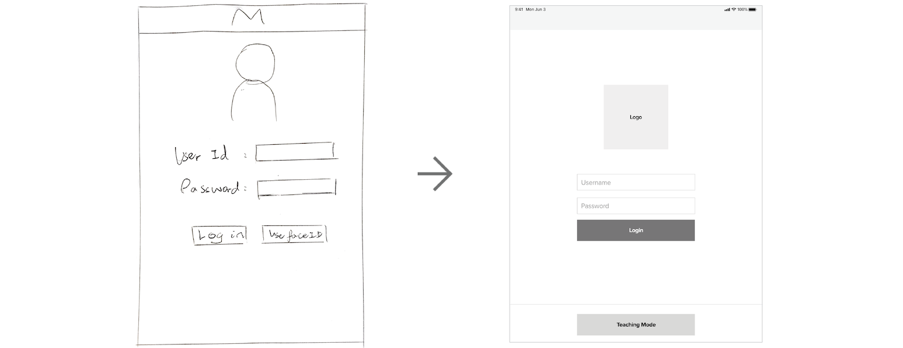
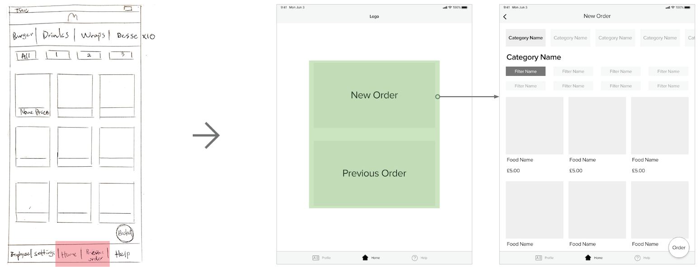
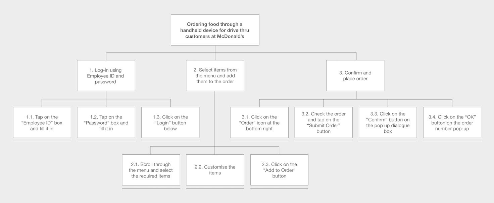

HappyOrder
Drive thru Handheld Ordering Device
UI Design
Feb - May 2020
James Barlow
Urjosee Biswas
Ziwei Chen
Jack Coulthard
Xiaofan Xia
Interface Design
Prototype
Non-User Evaluation

Our challenge was to design a handheld device used by restaurant employees to take orders from customers queueing in cars in order to reduce waiting time in the drive thru and improve customer satisfaction. McDonald's was chosen as our target restaurant so that we could be more immersive in the context.
In this project, a low-fidelity prototype with iterations from non-user evaluations was expected as the final product, as designing the interaction between human and computer was our first priority. To achieve this, we researched, developed the requirements specification, generated ideas, prototyped, evaluated with non-user approaches, iterated, and ultimately finalised our design.
01
Research
The first step consisted of researching how the product would be used and how different users would interact with the device. It was essential that we kept in mind the entire time that the product will be used by a trained member of staff, as their requirements for the product will be different to the customers.
The scenarios, personas and initial interviews gave a huge knowledge base to work from allowing for a highly detailed set of requirements with many different scenarios considered. It allows for a high chance of a product that will be suitable for the majority of users.
Scenarios
Initially, we discussed to come up with one scenario per person. Creating a scenario is an important process to try to think from the perspectives of the users and understand them, i.e. the employees of drive thru in this case. I imagined myself being in a real-world context as a drive thru employee and thought what I would encounter and think about if I was using the system on the first day.
Then we gathered all the scenarios created by other teammates. In our scenarios, all the users were of different age and with different levels of experience in working in the fast food restaurant. All these factors would directly affect the usage of the device and help us understand different points of view which was effective in creating the requirement list fulfilling a wide range of users.

Scenarios of users in different age and with different levels of experience
Personas
Four personas were created based on the users from the scenarios as a way to have a deeper understanding of users' behaviours and needs. Their goals, motivations and frustrations could therefore be addressed in the requirements of the device.
Personas developed based on the scenarios
Interviews
After creating the scenarios, we agreed that each of us would be responsible for conducting one interview with our family or friends, since we were not able to interview outside users. We set up the scope of the questions to be asked, so that the responses collected would be relevant. The questions were:
- Have you used any similar products to this? - If yes, what aspects do you like about them?
- What do you want from this product?
- Have you had any drive thru issues in the past? -If so, what were the issues?
- Any general suggestions?
The interviews were transcribed, with the takeaways highlighted which were useful for developing the requirements specification later.
Key takeaways from the interview transcripts were highlighted
02
Developing a Requirements Specification
Combining all the information and data gathered from the research stage, we created a requirements specification with 29 requirements in total. The requirements specification template by Volere was deployed, which included a unique referenece number, coding to show 'functional' or 'non-functional', one-sentence summary, source of the requirement, and rationale for the requirement.
Requirement ID No.8 in the Volere requirements specification template
After filling out all the 29 requirement spcification forms, we divided our requirements into three categories - high priority, medium priority, and low priority, based on three types of requirements suggested in the Kano's model of customer satisfaction, namely, Must-be requirements, attractive requirements and one-dimensional requirements.
The high priority ones are the must-have requirements. We made sure that these are incorporated into the design so that it leads to zero customer dissatisfaction. A few of the main requirements that we thought are an absolute must without which the customers will be highly dissatisfied.
High priority requirements selected for incorporating into the design
03
Ideation
Brainstorming
At the beginning of the prototyping stage, we spent 15 minute to brainstorm and come up with as many ideas as we could individually based on the requirements. We then shared our ideas with the team, as well as picked the good elements from each of the ideas.

All brainstorming sketches by the team
Discussion on Screen Size
Different size of the screen could be seen from our ideas. Members advocating phone size suggested it was more portable for employees to carry around or put in a pocket, while others argued that tablet size facilitated visibility. After discussion, we acknowledged continuing with tablet size. Lanyard could be attached to the device for the user to hang on the neck and prevent dropping.
Initial User Flow
Before moving on to the next stage of prototyping, we illustrated the user flow of the ordering system, which would be essential for us to have a clear picture of the features required and the steps that the users will go through.
Initial User Flow
Low-fidelity Prototype Sketches
Based on the user flow, we worked together and extracted all the good points from the designs we came up with from the brainstorming session to develop all the major screens of the ordering system, including layouts, elements on screens, keys on navigation bar.

Low-fidelity Prototype Sketches Based on Prior User Flow
Low-fidelity Prototype Development
After sketching the low-fidelity prototype with paper and pen, we moved on to using the digital prototyping tool, Adobe XD, to refine our prototype. I was responsible for making the digital prototype as it was difficult to split the work. Working alone was also easier to maintain consistency of layouts and elements. Adobe XD allowed me to preview the transitioning of screens and demonstrate the simulation of interacting with a real user interface. I could notice any interactional problems immediately during the design process. Throughout the process, I refined the design from sketches to wireframes with precise dimensions and layouts, since these factors would affect the user experience of the system. Making the wireframes in grey scale, I also learned what was needed to be emphasised on every screen.
A table was created to show the requirements we suggested previously and how they were integrated into the design.
Table Specifying the Development of Prototypes with the Requirements
#0 Overall
Bottom Navigation - The bottom navigation is fixed on-screen all the time so that users can switch to different tabs and access different pages and features efficiently and effortlessly (Requirement 15). The ‘Help’ tab on the navigation enables users to contact the manager through the device anytime (Requirement 9).
Back Button - For consistency, the button for going back is always at the top left corner, while the pair of ‘Cancel’ and ‘Confirm’ are in the same layout all the time (i.e. ‘cancel’ on the left, and ‘confirm’ on the right) (Requirement 15).
Icons on Bottom Navigation - Icons are used for indicating different tabs on the bottom navigation (Requirement 11).
#1 Login

Sketch to Prototype - Login Page
Login Details - The system requires users to log into the device using the employee’s username and password (Requirement 23).
Teaching Mode - There is a teaching mode for new staff to practice and be familiar with the ordering system during their training sessions (Requirement 22).
#2 Interim and Home

Sketch to Prototype - Starting a New Order
Previous Order - The original ‘Home’ tab displayed the menu directly, while another ‘Previous Order’ tab showed a list of previous orders. However, we found that it was unnecessary for employees to view too many completed orders, they only need to be able to see the last order placed. An interim screen with ‘New Order’ and ‘Previous Order’ made it clear for users to either start a new order or view the previous one (Requirement 14). With a click into the previous order, the employee can modify orders that have been sent to the kitchen, as long as the order has not been completed (Requirement 27).
New Order - On the new order page, all the food items are displayed with large images to provide a more image-based ordering system (Requirement 12). The menu is also categorised based on the existing food categorisation, with a slider of category tabs located on the top. Separated by the category name title, a group of filters is shown below to let users further narrow down the options and find the items quickly (Requirement 13).
Prototype - New Order Page and the Unavailable Item Dialog Notification
Real-time Kitchen Information - Real-time kitchen information is available as the button of the out-of- stock item will become disabled. Pop-up notification will also be sent to the device (Requirement 25).
#3 Food Ordering

Sketch to Prototype - Single Item/Meal Customisation Process
Customisation of Order - On the food ordering page, a ‘customise’ button is available for the users to customise the food item (Requirement 8).
Selecting Drink and Side - After clicking the ‘Select’ button for choosing the side and drink, the screen will be directed to the side and drink menus, which are both image-based (Requirement 12). Since there is a large number of options in the drink menu, filters are provided to categorise the drinks (Requirement 13).
#4 Submit Order
Sketch to Prototype - Order Submission Process
Reviewing Order - On the order page, users can review the order and the total amount before sending out (Requirement 24).
Modification of Order - There are ‘Remove’ and ‘Edit’ buttons under each of the items for users to modify (Requirement 26).
Confirming to Send - After clicking ‘Submit order’, a window will pop up asking users to confirm the action of submitting order (Requirement 28).
#5 Profile and Settings
Sketch to Prototype - Profile and Settings Page
Merging Profile and Setting Pages - The profile and settings tabs were combined into one to minimise the number of tabs on the bottom navigation.
Customised Settings - Users are allowed to customise the display’s font size, brightness and colour contrast (dark mode) on the profile and settings tab (Requirement 16)
Shift Time - Shift time and time remaining are visible on this tab. The device will also alert the user when break is coming up (Requirement 17).
Prototype - Break Time Popup Notification
04
Non-User Evaluation
Since there were constraints in conducting the user trials due to the Coronavirus measure, theory-based non-user methods , namely the Systematic Human Error Reduction and Prediction Approach (SHERPA) and the GOMS Keystroke level model (KLM), were used in this project to help evaluate the user interface.
SHERPA
SHERPA is a human error identification technique which requires the combined usage of the Hierarchical Task Analysis (HTA), in order to recognise some details of the interface in the first place. Therefore, HTA was first used to break down the task, which in turn provided us a broad understanding of the task flows and performances, as well as helped us figure out a way to reach the goal of our device using a step by step approach.
In our case, the main function of our device is to help the employees take orders from drive thru customers and send them to kitchen as fast as possible.

HTA Diagram
Throughout the SHERPA analysis, we discovered a selection error that might happen on the setting page and ammended by removing the "Custom" button since it was redundant. If the users want to change the font size or brightness, they could directly adjust through the slider, and hence without a "Custom" tab/button is more logical.
Custom Button Removed in Prototype V2
GOMS Keystroke Level Model
The GOMS Keystroke level model was used to evaluate the efficiency of the graphical user interface. A specific task of adding a meal to order was tested on two versions of the user interface. As the majority of the users, which are the employees of McDonald’s, must have previous experience in using the system, we assumed the operators to be experienced users.
I first broke down the task into a sequence of subtasks, such as adding a new order, selecting category, selecting filter, selecting food, selecting meal type and meal size, selecting side, selecting drink, and adding to order. As there was a workable prototype in Adobe XD, I simulated the tasks on the prototype and noted down all fundamental operators (e.g. keying, pointing, mentally preparing) in each subtask.
There are four types of activities in KLM with different approxiamte time accordingly. The average times are as follows:
B (Press or release a button) – 0.1s
P (Pointing) – 1.1s
M (Mentally preparing) – 1.2s
R (Responding) – 0.75s
I then added up the time taken for each of the subtasks to complete the calculation of time of the major tasks. However, I recognised that some of the subtasks seemed redundant and time consuming in "Selecting filter" and "Selecting meal type and meal size".
#1 Select Filter
Breakdown of Task - Select Filter
Comparison of the Two Filter Designs
In version 1, users must scroll across the filter bar in order to view other hidden filter names. As we reviewed the number of filters for a specific category of food (e.g. burger) and found that normally there are fewer than 8 filters (e.g. all, beef, chicken, fish, vegan), it would be better to show two rows of filter options rather than a scrolling bar. The actions of dragging (BB) and finding the icon (M) were therefore eliminated in version 2, saving 1.4s of time.
#2 Select Meal Type and Meal Size
Breakdown of Task - Select Meal Type and Meal Size

Comparison of the Two Meal Type & Size Selector Designs
In version 1, a dropdown menu will appear when the users press meal type and meal size. It takes longer for users to process the options and take action. Extra time is also needed for the system to respond to each of the actions. In version 2, all the available options of meal type and meal size are shown to the users, giving users higher visibility. If the users want to select a medium meal, they will only have to click on the meal button. The repetition of three sets of actions – finding (M), pointing (P), and pressing (B) is reduced, saving 7.2s in total.
KLM Result
Evaluating the user interface using the Keystroke level model, the efficiency of order taking was significantly improved by almost 20%. (Version 1: 43.7s; Version 2: 35.1s)
05
Final Design
User Flow
View High Quality Image →Interactive Prototype
Add New Order
Image-based ordering system with appropriate categorisations of food and clear layouts enables drive thru employees to take the orders from customers efficiently, hence reducing the queueing time.
Submit Order and Check Previous Order
Confirmation message before submission of order prevents unintended operations and avoids any hassle to the drive thru employees. They can review the order after it is being placed in case of customer queries.